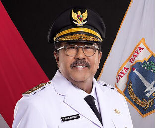

JAKARTA |
|
Gubernur Khusus Jakarta Pramono Anung Wakil Gubernur Khusus Jakarta Rano KarnoJakarta adalah ibu kota Indonesia, pusat pemerintahan, ekonomi, dan budaya, dengan status Daerah Khusus Ibukota (DKI) setara provinsi, saat ini dipimpin oleh Gubernur DKI Jakarta Pramono Anung bersama Wakil Gubernur Rano Karno untuk periode 2025-2030, yang dilantik Februari 2025, dengan fokus membangun Jakarta menjadi kota global yang sejahtera dan berkelanjutan. |